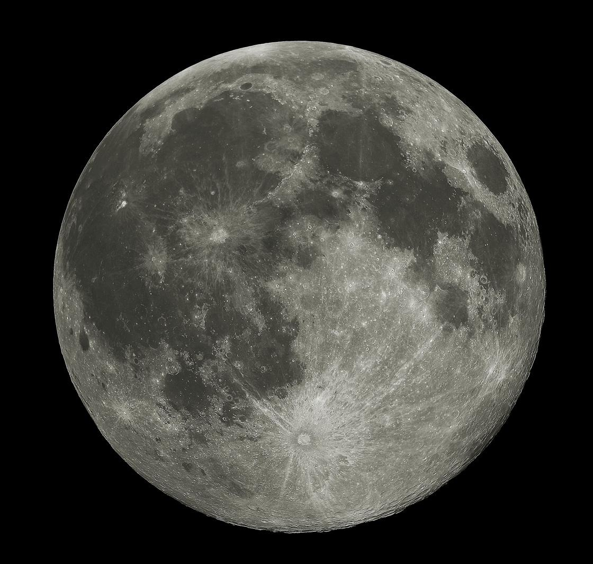

A collision. The Moon formed about 4.5 billion years ago. The leading explanation is that a body about the size of Mars struck the young Earth, and the Moon gathered from the debris thrown into orbit.
An ocean of molten rock. At first the Moon’s outer layers were molten. As that magma ocean cooled, dense minerals sank, while light crystals of plagioclase feldspar floated to the top and built the first crust. That pale, ancient rock is the bright highlands you see today.
The great bombardment. For hundreds of millions of years large asteroids and comets struck the Moon, blasting out craters and basins hundreds of kilometers across.
Then the lava. Heat from radioactive elements melted rock deep in the Moon’s mantle. Most of it erupted between about 3.9 and 3.1 billion years ago, flooding the low basins with dark basalt rich in iron and titanium. Some eruptions were fire fountains that sprayed beads of volcanic glass, like the orange soil Apollo 17 found. The youngest lava sampled so far, brought back by China’s Chang’e 5 in 2020, is about 2 billion years old.
The maria. Those dark lava plains are the maria. They cover nearly a third of the near side but only a few percent of the far side, where the crust is much thicker and less lava could reach the surface. Since then the Moon has changed little: young craters like Tycho and Copernicus are among the latest marks.
Saying it. Mare, Latin for “sea,” is said MAH-ray; the plural, maria, is MAH-ree-uh. Early telescope observers took the dark plains for seas, and the names stuck, as in Mare Tranquillitatis, the Sea of Tranquility.